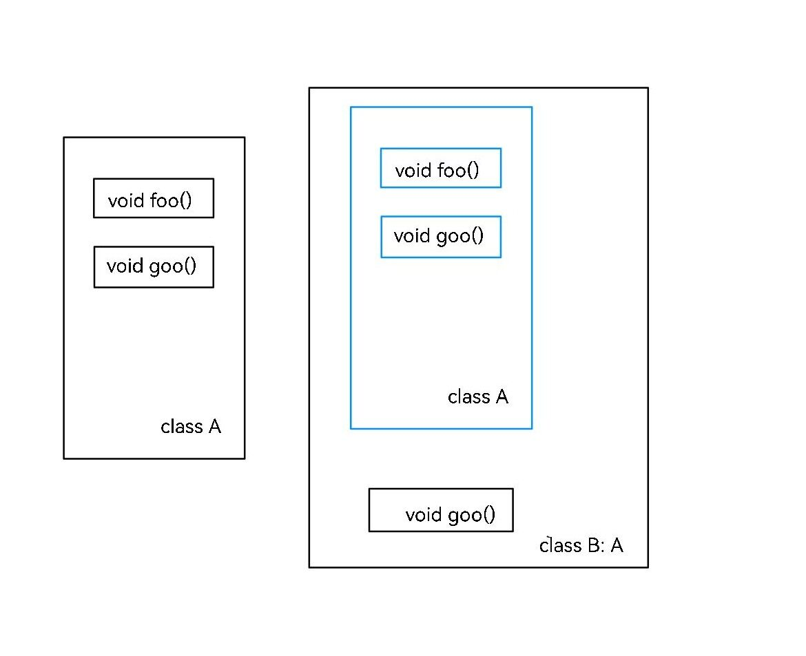
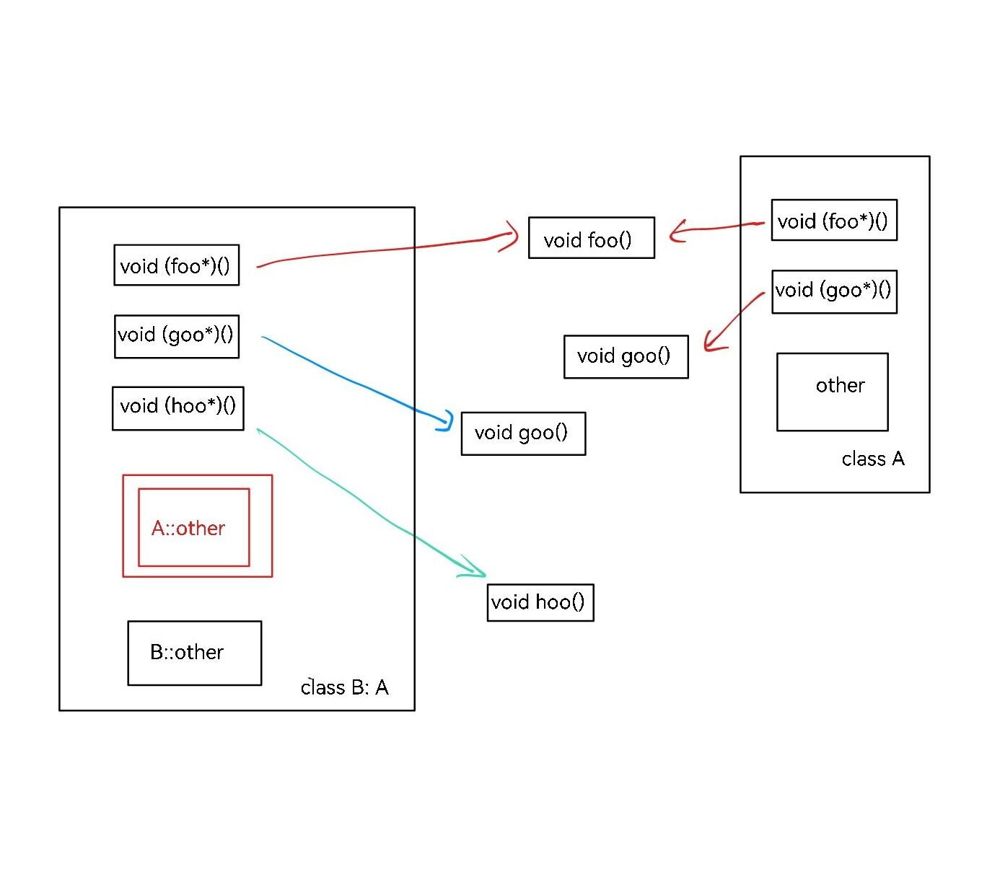

面向对象进阶
类的指针
如果我们有一个 A 类的对象 A a，我们怎么访问 a 的成员呢？
当然是 a.x 这样访问。
我们可以定义类的指针（什么东西都可以指针）。如果我们定义 A *b = &a，即定义一个 A* 类型的指针指向 a 的地址，那怎么通过指针访问 a 的成员呢？
我们可以将指针解引用，再用 . 操作符。如下：(*b).x。
但是，C++ 提供了另一种办法：b->x。一个很形象的，看上去就是指针的写法。这和 (*b).x 是等价的。
考虑到 b = &a，其实就是说，(&a)->x 和 a.x 是等价的。
构造函数与析构函数
构造函数
当一个对象被定义的时候，初始值是什么呢？
比如我们定义 string s; 但不赋值，这时候的 s 的值是什么呢？
这是由 string 的构造函数决定的。当我们定义自己的类时，我们也可以指定自己的构造函数。
所谓构造函数，是类的一个特殊成员函数。它没有返回值，函数名应该与类名完全相同。编译器会在这个对象被创建的时候调用一次。
如下所示：
构造函数实例
#include <iostream>
using namespace std;
class MyClass {
private:
int a, b, c;
public:
MyClass() {
a = b = c = 0;
}
MyClass(int a) { // 重名
this -> a = a;
b = c = 0;
}
MyClass(int a, int b, int c = 0) : a(a), b(b), c(c) {} // 默认值 & 语法糖
void print() {
cout << "a is " << a << ", b is " << b << ", c is " << c << endl;
}
};
int main() {
MyClass a;
a.print(); // 0, 0, 0
MyClass b(1);
b.print(); // 1, 0, 0
MyClass c(1, 2);
c.print(); // 1, 2, 0
MyClass d = MyClass(1, 2, 3);
d.print(); // 1, 2, 3
return 0;
}
析构函数
当一个对象结束了生命周期，会发生什么？
比如我们定义了 string s = "qwertyuiop";。这占据了 10 个字符的空间。当 s 没用的时候，这些空间就应该释放掉。这个操作就是在析构函数内实现的。
析构函数和构造函数很像。没有返回值，函数名应该与是 ~ 加上类名。编译器会在这个对象被销毁的时候调用一次。
如下所示：
构造函数与析构函数
#include <iostream>
#include <string>
using namespace std;
class MyClass {
private:
string name;
public:
MyClass(string name) : name(name) {
cout << name << " has been constructed." << endl;
}
~MyClass() {
cout << name << " has been deconstructed." << endl;
}
};
void foo() {
MyClass c("c");
}
int main() {
MyClass a("a");
cout << "Code block begins." << endl;
{
MyClass b("b");
}
cout << "Code block ended." << endl << endl;
cout << "Function foo begins." << endl;
foo();
cout << "Function foo ended." << endl << endl;
return 0;
}
/*
a has been constructed.
Code block begins.
b has been constructed.
b has been deconstructed.
Code block ended.
Function foo begins.
c has been constructed.
c has been deconstructed.
Function foo ended.
a has been deconstructed.
*/
复制对象
有三种情况会涉及到变量的复制。
- 显示使用
=赋值。 - 函数的返回值。
- 函数的参数。
这个复制过程中，会有一个新的对象被创建。我们来观察一下：
复制对象
#include <iostream>
#include <string>
using namespace std;
class MyClass {
private:
string name;
public:
MyClass(string name) : name(name) {
cout << name << " has been constructed." << endl;
}
~MyClass() {
cout << name << " has been deconstructed." << endl;
}
};
void foo(MyClass c) {
// do some thing
return;
}
MyClass goo() {
MyClass d("d");
return d;
}
int main() {
cout << "Function goo begins." << endl;
MyClass a = goo();
cout << "Function goo ended." << endl << endl;
cout << "Function foo begins." << endl;
foo(a);
cout << "Function foo ended." << endl << endl;
return 0;
}
/*
Function goo begins.
d has been constructed.
Function goo ended.
Function foo begins.
d has been deconstructed.
Function foo ended.
d has been deconstructed.
*/
运行结果似乎不太对？为什么 d 被销毁了两次？
事实上，复制过程确实创建了新对象。但这个对象不是由我们见过的构造函数创建的，而是另一种特殊的构造函数，称作“复制构造函数”。函数接受一个 const & 本身类型的静态引用。我们可以自己实现复制构造函数，并把新的对象标注为一份拷贝：
复制构造函数
#include <iostream>
#include <string>
using namespace std;
class MyClass {
private:
string name;
public:
MyClass(string name) : name(name) {
cout << name << " has been constructed." << endl;
}
MyClass(const MyClass &x) {
name = "copy of " + x.name;
cout << name << " has been constructed." << endl;
}
~MyClass() {
cout << name << " has been deconstructed." << endl;
}
};
void foo(MyClass c) {
// do some thing
return;
}
MyClass goo() {
MyClass d("d"), e("e");
return d;
}
int main() {
cout << "Function goo begins." << endl;
MyClass a = goo();
cout << "Function goo ended." << endl << endl;
cout << "Function foo begins." << endl;
foo(a);
cout << "Function foo ended." << endl << endl;
MyClass b = a;
return 0;
}
/*
Function goo begins.
d has been constructed.
e has been constructed.
e has been deconstructed.
Function goo ended.
Function foo begins.
copy of d has been constructed.
copy of d has been deconstructed.
Function foo ended.
copy of d has been constructed.
copy of d has been deconstructed.
d has been deconstructed.
*/
观察运行结果。
我们发现，= 赋值和参数传递都进行了拷贝，但是返回值好像没有拷贝。
这其实是 C++ 编译器的默认优化，会将返回值的拷贝和销毁省略。如果我们使用编译开关 -fno-elide-constructors，就可以关掉这个优化。再执行看看？
可能的问题
函数返回值和参数是一种容易被忽视的拷贝。返回值在拷贝之后会将原对象销毁，而参数在函数末尾也会被销毁。如果忽视了这一拷贝或销毁，没有仔细实现拷贝构造函数/析构函数，就可能出现错误。
我们来看一个例子：
矩阵乘法（面向对象版）
建立一个整数矩阵类 matrix ，其私有数据成员如下：
matrix 构造函数；
建立一个 *（乘号）的运算符重载，以便于对两个输入矩阵进行乘法运算；
建立输出函数 void display()，对整数矩阵按行进行列对齐输出。
下面是某个倒霉蛋写出的代码：
错误示范
#include <bits/stdc++.h>
using namespace std;
class Matrix {
private:
int row;
int column;
int **mat;
public:
Matrix(int r, int c) {
row = r;
column = c;
mat = new int *[r];
for (int i = 0; i < r; i++) {
mat[i] = new int[c];
}
}
void set(int i, int j, int v) {
mat[i][j] = v;
}
~Matrix() {
for (int i = 0; i < row; i++) {
delete mat[i];
}
delete mat;
}
void display() {
for (int i = 0; i < row; i++) {
for (int j = 0; j < column; j++) {
cout<<setw(10)<<mat[i][j];
}
cout << endl;
}
}
friend Matrix operator*(const Matrix &a, const Matrix &b);
};
Matrix operator*(const Matrix &a, const Matrix &b) {
if (a.column == 1 && a.row == 1) {
Matrix res(b.row, b.column);
for (int i = 0; i < res.row; i++) {
for (int j = 0; j < res.column; j++) {
res.mat[i][j] = b.mat[i][j] * a.mat[0][0];
}
}
return res;
}
if (b.column == 1 && b.row == 1) {
Matrix res(a.row, a.column);
for (int i = 0; i < res.row; i++) {
for (int j = 0; j < res.column; j++) {
res.mat[i][j] = a.mat[i][j] * b.mat[0][0];
}
}
return res;
}
Matrix res(a.row, b.column);
for (int i = 0; i < res.row; i++) {
for (int j = 0; j < res.column; j++) {
res.mat[i][j] = 0;
for (int k = 0; k < a.column; k++) {
res.mat[i][j] += a.mat[i][k] * b.mat[k][j];
}
}
}
return res;
}
int main() {
int r1, c1, r2, c2;
cin >> r1 >> c1; Matrix m1(r1, c1);
for (int i = 0; i < r1; i++) {
for (int j = 0; j < c1; j++) {
int x; cin >> x;
m1.set(i, j, x);
}
}
cin >> r2 >> c2; Matrix m2(r2, c2);
for (int i = 0; i < r2; i++) {
for (int j = 0; j < c2; j++) {
int x; cin >> x;
m2.set(i, j, x);
}
}
if (c1 == r2 || (c1 == 1 && r1 == 1)) {
Matrix m3 = m1 * m2;
m3.display();
} else cout << "Invalid Matrix multiplication!" << endl;
return 0;
}
代码的思路是，构造函数传入矩阵的大小，随后动态开辟空间。既然是 matrix 类自己开的空间，自然需要在析构函数里释放空间。
也许你已经发现了问题：没有实现复制构造函数。
会怎么样呢？代码中 Matrix m3 = m1 * m2; 先调用了 m1 * m2 对应的重载运算符函数（特殊的函数），得到一个 Matrix 类型的 res。随后，res 作为返回值被复制给 m3，但是 res 本身作为函数内部的变量，在函数结束后就被销毁了。
我们着重分析一下这个过程。res 是由构造函数 Matrix res(a.row, b.column) 显示创建的，因此在构造函数中通过 new 开辟了新的空间。此时有 res.mat 这个指针指向这块空间。
随后，res 被复制给 m3。由于没有实现复制构造函数，编译器使用了默认的复制方法：把所有的成员变量复制一份。但是，编译器复制 mat 指针的时候，并不知道 mat 具体指向多大的内容，也没法开辟新的空间，而是简单地让两个指针指向的地址相等。也就是说，现在有两个指针 res.mat，m3.mat，都指向同一块地址，存储着答案。
但是，res 的生命周期结束了，调用析构函数。于是 res.mat 指向的空间被 delete 释放了。但是此时的 m3.mat 还指着这个被释放的空间。最终输出 m3 的时候，实际上进行了非法的指针访问。Runtime Error。
更进一步，我们还会发现，main 函数结束之后 m3 又被销毁，析构函数又一次 delete 了一块已经被释放的空间。这更是非法的。IOT Trapped。
所有的一切加入复制构造函数就可以解决。正确的复制不应该复制指针，而是应该开辟新的空间，然后复制空间的内容。如下：
#include <bits/stdc++.h>
using namespace std;
class Matrix {
private:
int row, column;
int **mat;
public:
Matrix(const Matrix &x) {
row = x.row;
column = x.column;
mat = new int *[row];
for (int i = 0; i < row; i++) {
mat[i] = new int[column];
memcpy(mat[i], x.mat[i], sizeof(int) * column);
}
}
};
// 省略
运算符重载
我们以上面的矩阵乘法为例，详细解释运算符重载的概念。
在上面的代码中，我们定义了一个矩阵对象。我们可以用一个函数计算矩阵乘法：传入两个矩阵对象，返回一个矩阵对象表示乘法的成果。
Matrix multiply(const Matrix &a, const Matrix &b) {
Matrix res(a.row, b.column);
// 计算 res
return res;
}
这样，我们要计算乘法的时候，就用 multiply(m1, m2) 就好了。
但是，这太长了，也不够直观。怎么办呢？
C++ 提供了重载运算符的办法。实现也很简单，我们把 multiply 这个函数名改成一个特殊的名字：operator*。那么，编译器遇到 m1 * m2 时，就会自动换成 operator*(m1, m2)。这和 multiply(m1, m2) 是一样的。
最后，由于 row、column 和 mat 是私有的成员变量，为了让乘法函数能够访问，我们将 operator* 声明成友元函数。如下：
class Matrix {
// 省略
public:
friend Matrix operator*(const Matrix &a, const Matrix &b);
}
Matrix operator*(const Matrix &a, const Matrix &b) {
Matrix res(a.row, b.column);
// 和 multiply 函数一样
return res;
}
不同的运算符
下面是可重载的运算符列表：
| 运算符类型 | 运算符 |
|---|---|
| 双目算术运算符 | + (加) - (减) * (乘) / (除) % (取模) |
| 关系运算符 | == (等于) != (不等于) < (小于) > (大于) <= (小于等于) >= (大于等于) |
| 逻辑运算符 | || (逻辑或) && (逻辑与) ! (逻辑非) |
| 单目运算符 | + (正) - (负) * (指针) & (取地址) |
| 自增自减运算符 | ++ (自增) -- (自减) |
| 位运算符 | | (按位或) & (按位与) ~ (按位取反) ^ (按位异或) << (左移) >> (右移) |
| 赋值运算符 | =, +=, -=, *=, /= , %= , &=, |=, ^=, <<=, >>= |
| 空间申请与释放 | new, delete, new[] , delete[] |
| 其他运算符 | () (函数调用) -> (成员访问) , (逗号) [] (下标) |
下面是不可重载的运算符列表：
.：成员访问运算符.*,->*：成员指针访问运算符::：域运算符sizeof：长度运算符?:：条件运算符#： 预处理符号
一个最好的举例办法是实现一份高精度模板。即我们自定义一个支持加法运算的大整数类型。如下所示：
无符号高精度加法
#include <bits/stdc++.h>
using namespace std;
class BigInt {
private:
static const int BASE;
vector<int> val;
void maintain();
public:
BigInt();
BigInt(int v);
BigInt(const BigInt &x);
friend BigInt operator+ (const BigInt &x, const BigInt &y);
friend BigInt operator+ (const BigInt &x);
friend BigInt& operator++ (BigInt &x); // ++x
friend BigInt operator++ (BigInt &x, int); // x++
friend bool operator< (const BigInt &x, const BigInt &y);
friend BigInt& operator+= (BigInt &x, const BigInt &y);
friend istream& operator>> (istream &is, BigInt &x);
friend ostream& operator<< (ostream &os, const BigInt &x);
};
const int BigInt::BASE = 10;
void BigInt::maintain() {
int c = 0;
for (int &x : val) {
x += c;
c = x / BASE;
x %= BASE;
}
if (c) val.push_back(c);
while (val.size() > 1 && val.back() == 0) val.pop_back();
}
BigInt::BigInt() {
val.push_back(0);
}
BigInt::BigInt(int x) {
val.push_back(x);
maintain();
}
BigInt::BigInt(const BigInt &x) {
val = x.val;
}
BigInt operator+(const BigInt &x, const BigInt &y) {
BigInt res = x;
for (int i = 0; i < y.val.size(); i++) {
if (i == res.val.size()) res.val.push_back(y.val[i]);
else res.val[i] += y.val[i];
}
res.maintain();
return res;
}
BigInt operator+(const BigInt &x) {
return x;
}
// ++x 单目运算符
BigInt& operator++(BigInt &x) {
x.val[0]++;
x.maintain();
return x;
}
// x++ 通过后面加上一个无用的隐藏的 int 实现，实际是告诉编译器这是一个后缀++
BigInt operator++(BigInt &x, int) {
BigInt res = x;
x.val[0]++;
x.maintain();
return res;
}
bool operator<(const BigInt &x, const BigInt &y) {
if (x.val.size() != y.val.size()) {
return x.val.size() < y.val.size();
}
for (int i = x.val.size() - 1; i >= 0; i--) {
if (x.val[i] != y.val[i]) {
return x.val[i] < y.val[i];
}
}
return false;
}
BigInt& operator+=(BigInt &x, const BigInt &y) {
for (int i = 0; i < y.val.size(); i++) {
if (i == x.val.size()) x.val.push_back(y.val[i]);
else x.val[i] += y.val[i];
}
x.maintain();
return x;
}
/*
cin cout 的原理：
cin 是 istream 类的对象。istream 类重载了与许多常见类型的 >> 运算符。
比如重载了 istream::operator>>(istream, int&) 就可以用 cin >> (一个 int 变量) 来输入一个 int
cin 的巧思在于，将 >> 运算符的返回值设为 cin 本身实现连续输入
比如 cin >> a >> b
先执行 cin >> a，输入 a 之后返回 cin 自己，这个 cin 返回值再 >> b，完成对 b 的输入
cout 同理
*/
istream& operator>>(istream &is, BigInt &x) {
x.val.clear();
int ch = is.get();
while (ch < '0' || ch > '9') ch = is.get();
while (ch >= '0' && ch <= '9') {
x.val.push_back(ch - '0');
ch = is.get();
}
reverse(x.val.begin(), x.val.end());
x.maintain();
return is;
}
ostream& operator<<(ostream &os, const BigInt &x) {
for (int i = x.val.size() - 1; i >= 0; i--) {
os << x.val[i];
}
return os;
}
int main() {
BigInt a, b;
cin >> a >> b;
cout << "a < b: " << (a < b) << endl << endl;
cout << "a + b: " << a + b << endl;
cout << "a += b: " << (a += b) << endl;
cout << "after a += b: " << a << endl << endl;
cout << "a++: " << (a++) << endl;
cout << "after a++: " << a << endl << endl;
cout << "++a: " << (++a) << endl;
cout << "after ++a: " << a << endl << endl;
return 0;
}
访问说明符
上面我们提到了：“为了让乘法函数能够访问，我们将 operator* 声明成友元函数”。这是什么意思？
思考类的一个好方法是把类看作人。
- 人能做很多事，这对应了类的方法（成员函数）。
- 人有面板属性，这对应了类的属性（成员变量）。
- 人是爹妈生的，这对应了类的继承。
- 人有隐私，这对应了类的访问说明符。
在类中，我们可以指定某些变量和函数是别人不能访问的。一般来说，我们把一些中间过程/辅助函数隐藏起来，因为正常的使用没有在外部调用的必要。
另外，合理的做法是把所有的原始数据都隐藏起来，避免用户对数据的直接乱改导致不合法的结果。如果我们需要知道数据的值，我们可以公开一个函数，返回值是数据的值。这样就实现了只读的权限。
也许你会说，反正都是自己写的代码，为什么要多此一举。好吧，是“为了安全”。此外，也许你的代码会被很多人调用，你可不希望别人乱搞。
怎么做呢？看看下面的例子：
访问说明符
#include <iostream>
using namespace std;
class MyClass {
int a; // 默认权限是 private
public: // 指定接下来的内容是 public
int b;
private: // 指定接下来的内容是 private
void foo() {
cout << "foo" << endl;
}
public: // 可以多次指定 public 或 private
void goo() {
cout << "goo" << endl;
}
void fooo() {
a = 10; // 不会报错，在类内可以访问 private
foo(); // 不会报错
}
};
int main() {
MyClass c;
c.b = 100; // 不会报错，在类外可以访问 public
c.goo(); // 不会报错，输出 goo
// c.a = 100; // 报错，类外不可访问 private
// c.foo(); // 报错
c.fooo(); // 不会报错，通过 public 间接访问 private。a 被设为 10, 输出 foo
return 0;
}
友元
人有朋友。好朋友也许知道你的一些秘密。npy 也许能花你的钱。
类也一样。C++ 允许在类内指定别的某个类或是某个函数是“友元”。友元的类或函数内可以访问自己的私有域。
比如说，在上面的矩阵乘法的例子里，operator* 就是一个 Matrix 类的友元函数。尽管 operator* 是定义在类外的函数，但是因为它是友元，所以同样能够访问私有的 row、column 和 mat。
为了加深理解，我们再看一道例题：
程序猿与产品狗
在公司里面，程序猿经常有一堆todolist要做，而这些todolist是产品经理分配给他们的。但是当程序员遇到不懂技术的产品狗时，就悲剧了。产品经理经常修改他们的todolist，比如：添加，减少他们的todolist。
很难想象出题人和产品经理有什么仇。
没有什么算法。按照题目要求定义 ProductDog 和 CodeMonkey，产品狗有一个私有变量 vector<CodeMonkey> 维护它管理的所有程序猿；程序猿有两个私有变量维护名字和 todolist 数量。
为了让产品狗能够修改程序猿的私有变量，可以将 ProductDog 这个类设为 CodeMonkey 的友元类。这样，产品狗的所有成员函数都可以修改程序猿的私有变量。或者将 ProductDog::add_todolist 和 ProductDog::reduce_todolist 两个函数设为 CodeMonkey 的友元函数。
代码如下：
参考代码
#include <bits/stdc++.h>
using namespace std;
class CodeMonkey;
class ProdoctDog {
vector<CodeMonkey> coders;
public:
void add_todolist(CodeMonkey &coder, int x);
void reduce_todolist(CodeMonkey &coder, int x);
void add_coder(const CodeMonkey &coder);
CodeMonkey& find_coder(string name);
void print_todolists();
};
class CodeMonkey {
private:
string name;
int todolist;
public:
friend ProdoctDog;
int sizeof_todolist();
CodeMonkey(string name, int todolist);
};
void ProdoctDog::add_coder(const CodeMonkey &coder) {
coders.push_back(coder);
}
CodeMonkey& ProdoctDog::find_coder(string name) {
for (CodeMonkey &coder : coders) {
if (coder.name == name) {
return coder;
}
}
}
void ProdoctDog::print_todolists() {
for (CodeMonkey &coder : coders) {
cout << coder.name << " " << coder.sizeof_todolist() << endl;
}
}
void ProdoctDog::add_todolist(CodeMonkey &coder, int x) {
coder.todolist += x;
}
void ProdoctDog::reduce_todolist(CodeMonkey &coder, int x) {
coder.todolist -= x;
}
int CodeMonkey::sizeof_todolist() {
return todolist;
}
CodeMonkey::CodeMonkey(string name, int todolist) : name(name), todolist(todolist) {}
int main() {
int n, m;
cin >> n;
ProdoctDog dog;
for (int i = 1; i <= n; i++) {
string s; int x;
cin >> s >> x;
dog.add_coder(CodeMonkey(s, x));
}
cin >> m;
while (m--) {
string s;
int op, x;
cin >> s >> op >> x;
if (op == 0) {
dog.add_todolist(dog.find_coder(s), x);
} else {
dog.reduce_todolist(dog.find_coder(s), x);
}
}
dog.print_todolists();
return 0;
}
This 指针
上面的代码里有一个之前没有提到的用法：类名::函数名。这是在类外面访问类内函数声明的方法。我们知道，函数可以先声明，后定义。同样的，类的成员函数可以在类内声明，类外定义。即使是构造函数也是一样的。
要加类名的原因是可能有很多类有同一个名字的函数。只有类名加函数名才能唯一确定。
事实上，这种用法更贴近类实现的本质。我们在构造函数里就提过 this 指针。所谓 this 指针，首先是一个自己类型的指针。在类的任何函数里，你都可以调用 this 指针，且 this 指针总是指向自己。正如我们在构造函数的例子中使用的一样，用 this 指针，就可以明确调用自己的成员变量和函数，不被变量冲突困扰。
但是问题来了：我们并没有定义这个 this 指针啊？它是哪里冒出来的？为什么总是指向自己？我可以修改这个指针吗？
我们写的函数是像这样：
但是对于编译器来说，这个函数的全名叫做 MyClass::foo，即上文提到的唯一记号。而这个函数的参数列表是什么样的呢？
大概是这样的：MyClass::foo(MyClass *this, int a, int b)。编译器添加了一个隐藏的形参 this。当你在调用 a.foo(1, 2) 的时候，编译器实际是在做 MyClass::foo(&a, 1, 2)。所谓 .，只不过是一种语法糖。（这只是方便理解，C++ 并不允许你用后面的办法调用成员函数。但是，Python 真的是这么做的）
另外，this 指针是不可赋值的，也不可重新分配。
模板
我们来看一个新问题：求一个整数的正整数次幂。
Warning
事实上，答案可能会大到存不下。不过这里我们忽略乘法造成的溢出问题。
一种比较简单的算法是用幂的定义，真的乘这么多次：
// 计算 x 的 p 次方
int power(int x, int p) {
int res = 1;
for (int i = 1; i <= p; i++) {
res = res * x;
}
return res;
}
但是，当 \(p\) 很大的时候，这个算法很慢。也许聪明的你能想到优化的办法：
- 若 \(p = 2k\)，我们可以计算 \(y = x^k\)，则 \(x^p = y^2\)。
- 若 \(p = 2k + 1\)，同样计算 \(y = x^k\)，则 \(x^p = y^2x\)。
而计算 \(x^k\)，可以用同样的办法继续降低指数，直到指数为 1 为止。
由于 \(x^p\) 与 \(x^k\) 的计算方法是相同的，我们可以用所谓“递归函数”实现这一过程。这被称为快速幂算法。如下所示：
// 计算 x 的 p 次方
int quick_power(int x, int p) {
if (p == 1) return x;
int y = quick_power(x, p / 2);
int res = y * y;
if (p % 2 == 1) res = res * x;
return res;
}
由于每次调用 \(p\) 的大小减半，因此这个函数最多计算 \(\lfloor \log_2 p\rfloor + 1\) 次，显著变快了。
很好。现在我们有新需求了：能求幂的可不止整数，我们希望快速计算矩阵的整数次幂。
我们已经有了一个支持乘法的矩阵类 Matrix。也许你会想，我们再为矩阵实现一个函数好了：
Matrix matrix_power(Matrix x, int p) {
if (p == 1) return x;
Matrix y = matrix_power(x, p / 2);
Matrix res = y * y;
if (p % 2 == 1) res = res * x;
return res;
}
但这只是权宜之计。如果又来另一个 Matrix2 类要求幂怎么办？或者是一个实现了乘法的高精度数 BigInt？
每个类型实现一个函数自然可以。但这太蠢了，而且毫无技术含量。假设要求幂的类型是 T，我们的代码总是可以写成如下形式：
T quick_power(T x, int p) {
if (p == 1) return x;
T y = quick_power(x, p / 2);
T res = y * y;
if (p % 2 == 1) res = res * x;
return res;
}
能不能告诉编译器这一点，让编译器帮我们自动生成呢？
可以的！C++ 采用了叫做“模板”的方法实现这一点。只要在我们的“一般形式”前面写上这么一段：
template <class T> // or template <typename T>
T quick_power(T x, int p) {
if (p == 1) return x;
T y = quick_power(x, p / 2);
T res = y * y;
if (p % 2 == 1) res = res * x;
return res;
}
编译器就会知道：哦，这个 T 是任意一种类型。当这个函数真的被调用时，编译器会根据传入的 x 的参数确定 T 的含义，进而生成一段对应类型的代码。T 具体是什么类型不重要，只要 T 支持乘法运算符，就能编译出对应的函数。
不仅函数可以有模板，类也可以有模板！比如我们的 Matrix 类，其内部使用 int 类型存储数据。但也许我们要用到小数，也许我们要用到更大的 long long，甚至也许我们要用到自定义的 BigInt。这个时候，我们就可以给 Matrix 类带上模板，如下：
template <class ValueType>
class Matrix {
private:
int row, column;
ValueType **mat;
public:
Matrix(int r, int c) : row(r), column(c) {
mat = new (ValueType*)[r];
for (int i = 0; i < r; i++) {
mat[i] = new ValueType[c];
}
}
// 省略
};
这样一来，我们就可以指定任意类型的矩阵了。（甚至是矩阵的矩阵）
等一下。编译器可以知道 quick_power 的模板类型是因为参数里面有 T 类型。但是 Matrix 怎么办呢？或者参数里没有 T 的怎么办呢？
C++ 采用如下方法：
Matrix<long long> m; // 定义一个 long long 矩阵
template <typename T> // or template<class T>
T foo() {
return T();
}
foo<double>(); // 调用 double 类型对应的 foo 函数。
也即在函数名/类名后面跟一对尖括号，尖括号里面写类型。
有没有觉得很熟悉？没错，vector<int> 就是模板类的典范。在尖括号里写什么类型，就得到能存什么类型的 vector。这种可以指定存储类型的类，也被我们称为容器。
模板几乎在标准库中到处都是。比如 max。
此外，C++ 也允许定义多个不确定类型，即 template <class T1, class T2>，只要在调用的时候像函数参数一样一一写出即可。如 <int, long long>。
模板元编程
模板的灵活性远不止于此。模板里不仅能够传递类型，还能够传递常量。模板可以拥有不定长的类型列表，能写无限个类型。
C++ 的模板设计是图灵完备的，由于模板函数与模板类是在编译时就确定到具体的类型的，你甚至可以在编译阶段进行计算。这被称作“模板元编程”。
可以参考模板——黑魔法入门到入土 - 洛谷专栏。
抖机灵
我们都知道，Python 里面 ** 是求幂。我们可以在 C++ 中实现一样的效果吗？
可以的！看如下代码：
#include <bits/stdc++.h>
using namespace std;
struct MyPower {
int val;
MyPower(int val) : val(val) {}
};
struct MyInt {
int val;
MyInt(int val) : val(val) {}
};
MyPower operator *(const MyInt &x) {
return MyPower(x.val);
}
int quick_power(int x, int p) {
if (p == 1) return x;
int y = quick_power(x, p / 2);
int res = y * y;
if (p % 2 == 1) res = res * x;
return res;
}
MyInt operator *(const MyInt &x, const MyPower &y) {
return MyInt(quick_power(x.val, y.val));
}
ostream& operator<<(ostream &os, const MyInt &x) {
return (os << x.val);
}
int main() {
MyInt a(3), b(4);
cout << a ** b << endl;
return 0;
}
// 输出 3 的 4 次方 81
你知道背后的原理吗？
继承
“龙生龙，凤生凤，老鼠的儿子会打洞”。所谓继承，就是让一个类拥有另一个类的内容。
来看下面的代码：
#include <iostream>
using namespace std;
class BaseClass {
public:
int a;
};
class MyClass : public BaseClass {
public:
void print() {
cout << a << endl;
}
};
int main() {
MyClass c;
c.a = 114;
c.print();
return 0;
}
这揭示了继承的基本概念。如何声明 MyClass 继承于 BaseClass？我们在声明 MyClass 之后添加了 : [继承方式] <继承类名>。
程序会正常输出 114。可以看到，虽然 MyClass 中没有定义 a 变量，但是 print 函数仍然能读取 a，我们也能从外部改变 a 的值。这是因为 MyClass 继承了 BaseClass 中的 a 变量。
下面，我们把被继承的类叫做“父类”，继承的类叫做“子类”。
有趣的观察
在计算机领域，类似的关系大多叫做父子关系，比如树上的父节点子节点，多线程里的父进程子进程。但是在生物领域，这种关系大多叫做母子关系。母本和子本，母一代和子一代。
继承的访问权限
上面的代码中有多处出现了 public。是什么意思？
首先，我们要引入一个概念叫做 protected。这是一种和 public 与 private 并列的关键字，都是进行访问控制的。
它的含义如下：被 protected 修饰的内容可以在子类里访问，但是不可在外部访问，也通过子类在外部访问。
看这个例子：
#include <iostream>
using namespace std;
class BaseClass {
protected:
int a;
};
class MyClass : public BaseClass {
public:
void print() {
cout << a << endl;
}
};
int main() {
MyClass c;
// c.a = 114; // 报错！不能在外部访问 protected 变量
c.print();
return 0;
}
除了我们已经知道的访问说明符，还有一个地方出现了 public。是在声明继承的时候选择的继承方式。
继承方式也有 public、protected 和 private。它的意思是，从父类继承的内容在子类中具有什么样的访问权限。
public：父类的公有成员也是子类的公有成员，父类的保护成员也是子类的保护成员，父类的私有成员不能直接被子类访问，但是可以通过调用父类的公有和保护成员来访问。protected： 父类的公有和保护成员将成为子类的保护成员。private：父类的公有和保护成员将成为子类的私有成员。
下面这张表列出了父类中的内容在不同继承方式下的可见性：
public 继承 |
protected 继承 |
private 继承 |
|
|---|---|---|---|
父类的 public 内容 |
子类中是 public |
子类中是 protected |
子类中是 private |
父类的 protected 内容 |
子类中是 protected |
子类中是 protected |
子类中是 private |
父类的 private 内容 |
子类中不可见 | 子类中不可见 | 子类中不可见 |
需要注意，“子类中不可见”并不意味着变量/函数不存在。继承会继承整个父域的内容，即使不可见的内容也会被创建，而且可以被父类的可见函数间接调用。
重写
如有必要，子类可以重写父类的方法。看下面的题目：
队列操作
实现队列的入队、出队、求队列长度。其中出队函数要返回被出队的元素。出队失败输出 Invalid。
C++ 标准库中有一个类叫 queue，实现了队列的数据结构。这是一个类似于 vector 的容器，需要指定类型使用。显然这里是 queue<int>。
queue 已经实现了入队、出队、求队列长度的函数。但是，queue 的出队并不返回被出队的元素。我们可以自定义一个类型继承 queue<int>，重写里面的 pop 函数，实现这道题的要求。
代码如下：
参考代码
#include <queue>
#include <iostream>
using namespace std;
class MyQueue : public queue<int> {
public:
int pop() {
int res = front();
queue<int>::pop();
return res;
}
};
int main() {
int n;
cin >> n;
MyQueue q;
while (n--) {
int op;
cin >> op;
if (op == 1) {
int x;
cin >> x;
q.push(x);
} else if (op == 2) {
if (!q.empty()) {
cout << q.pop() << endl;
} else {
cout << "Invalid" << endl;
}
} else {
cout << q.size() << endl;
}
}
return 0;
}
我们在子类中重写了 pop 函数，这样调用 q.pop 时，就会默认使用子类定义的函数。
但是，我们的重写只是为了返回被弹出的值，而“弹出”这个动作仍需要交给父类实现。如果代码第九行直接写 pop()，就会一直递归调用子类的重写函数。
我们需要显示指定调用父类的 pop() 函数。这时候就要用到 ::，限定调用父类 queue<int> 域内部的 pop() 函数。
特别地，如果你想在类外部调用父类的 pop()，可以写 q.queue<int>::pop()。
继承的更多复杂行为
关于继承的更多复杂行为，包括构造函数继承，构造、析构顺序，多重继承等限于篇幅不再展开，可以参考 组合与继承 - SAST skill docs。
虚的东西
虚函数
所谓“虚”，是 C++ 类域的一种概念。
普通的函数在域中就是以函数形式存在的。在继承的时候，父类的函数存在父类的域里，子类的函数存在子类的域里。比如下面的代码：
普通函数
#include <iostream>
using namespace std;
class A {
public:
void foo() {
cout << "A foo()" << endl;
}
void goo() {
cout << "A goo()" << endl;
}
};
class B : public A {
public:
void goo() {
cout << "B goo()" << endl;
};
};
int main() {
B x;
A *x_point_A = &x;
A &x_as_A = x;
A x_cut_A = x;
cout << "x:" << endl;
x.foo();
x.goo();
cout << endl << "x_point_A:" << endl;
x_point_A -> foo();
x_point_A -> goo();
cout << endl << "x_as_A:" << endl;
x_as_A.foo();
x_as_A.goo();
cout << endl << "x_cut_A:" << endl;
x_cut_A.foo();
x_cut_A.goo();
return 0;
}
/*
x:
A foo()
B goo()
x_point_A:
A foo()
A goo()
x_as_A:
A foo()
A goo()
x_cut_A:
A foo()
A goo()
*/

上面有一个需要补充的概念：剪切。当我们把子类强转为父类时，子类中的父类域会被剪切出来，而子类的域就被剪没了。所以无论是 A 类的指针，A 类的引用和 A 类的复制，都只能访问 A 类的内容。
如果我们想要用 A 的指针访问 B 的内容，怎么办呢？
你可能觉得这没什么用。不，这很有用。如果 A 有很多子类，但都需要实现同一种算法。若我们能用父类的指针访问子类的内容，我们就可以只为父类实现代码，子类当作父类的指针就好。这就叫做“多态”。
想要实现这一点，我们可以把需要访问的函数设为虚函数，在定义的时候加上一个 virtual。
虚函数
#include <iostream>
using namespace std;
class A {
public:
virtual void foo() {
cout << "A foo()" << endl;
}
virtual void goo() {
cout << "A goo()" << endl;
}
};
class B : public A {
public:
virtual void goo() {
cout << "B goo()" << endl;
};
virtual void hoo() {
cout << "B hoo()" << endl;
};
};
int main() {
B x;
A *x_point_A = &x;
A &x_as_A = x;
A x_cut_A = x;
cout << "x:" << endl;
x.foo();
x.goo();
x.hoo();
cout << endl << "x_point_A:" << endl;
x_point_A -> foo();
x_point_A -> goo();
// x_point_A -> hoo(); // 编译错误
cout << endl << "x_as_A:" << endl;
x_as_A.foo();
x_as_A.goo();
// x_as_A.hoo(); // 编译错误
cout << endl << "x_cut_A:" << endl;
x_cut_A.foo();
x_cut_A.goo();
// x_cut_A.hoo(); // 编译错误
return 0;
}
/*
x:
A foo()
B goo()
B hoo()
x_point_A:
A foo()
B goo()
x_as_A:
A foo()
B goo()
x_cut_A:
A foo()
A goo()
*/

虚函数使用函数指针的方式存储在类内。继承过程中，父类的虚函数表不会存在父域里，而是复制到子域里。当函数重载发生时，新的函数指针被直接替换到被重载的函数指针的位置。
这样，当调用 x_point_A -> goo() 时，编译器实际是在找 x_point_A 指向内容的第二个函数指针。如果 x_point_A 指向的是 A 类型，则这个函数指针指向 A 的 goo。如果 x_point_A 指向的是 B 类型，则这个函数指针指向 B 的 goo。这就实现了多态。
纯虚函数
父类可以不实现虚函数，只是做一个声明，实现交给子类来完成。这被称为纯虚函数。包含纯虚函数的类被称为纯虚类（或抽象类、接口）。因为实现不完整，纯虚类只能作为一种结构，但不能被实例化。
定义纯虚函数也很简单，只要在函数的括号后面加上 =0 即可。
我们来看一道例题：
用虚函数计算各种图形的面积
定义抽象基类Shape，由它派生出五个派生类：Circle（圆形）、Square（正方形）、Rectangle（ 长方形）、Trapezoid （梯形）和Triangle （三角形），用虚函数分别计算各种图形的面积，输出它们的面积和。要求用基类指针数组，每一个数组元素指向一个派生类的对象。PI=3.14159f，单精度浮点数计算。
显然 Shape 自己没法计算面积。所以 Shape 应该是纯虚类，声明了面积函数，但不实现。
代码如下：
参考代码
#include <bits/stdc++.h>
using namespace std;
const float PI(3.14159f);
class Shape {
public:
virtual float square()=0;
virtual void input()=0;
};
class Circle : public Shape {
private:
float radius;
public:
void input() {
cin >> radius;
}
float square() {
return PI * radius * radius;
}
};
class Square : public Shape {
private:
float length;
public:
void input() {
cin >> length;
}
float square() {
return length * length;
}
};
class Rectangle : public Shape {
private:
float width, height;
public:
void input() {
cin >> width >> height;
}
float square() {
return width * height;
}
};
class Trapezoid : public Shape {
private:
float lengtha, lengthb, height;
public:
void input() {
cin >> lengtha >> lengthb >> height;
}
float square() {
return (lengtha + lengthb) * height / 2;
}
};
class Triangle : public Shape {
private:
float length, height;
public:
void input() {
cin >> length >> height;
}
float square() {
return length * height / 2;
}
};
int main() {
vector<Shape *> vec;
vec.push_back(new Circle());
vec.push_back(new Square());
vec.push_back(new Rectangle());
vec.push_back(new Trapezoid());
vec.push_back(new Triangle());
for (Shape *p : vec) {
p -> input();
}
float sum(0);
for (Shape *p : vec) {
sum += p -> square();
}
printf("%.3f\n", sum);
return 0;
}
虚函数与模板
上述“多态”的思想，其实用模板也能实现。两者有什么区别呢？
使用纯虚函数继承的方法，要求子类必须要实现所有纯虚函数才能实例化。也就是说，实际运行时，我们可以确保被指针指向的类一定实现了我们需要的功能。而模板就不行，无法对传入类的方法做出限制。
此外，模板会在编译期展开，其实也是对每个子类实现，被称为静多态，会降低编译速度，增大编译体积。但是虚函数的方法是动态的，编译更快，体积更小。
final 与 override
有些核心方法在实现之后，我们就不希望别人修改了。此时就可以选择用 final 修饰。
不展开，还是推荐参考 多态与模板 - SAST skill docs。
虚继承
virtual 关键字不仅可以在成员函数之前定义，还可以在类继承的时候指定。这就是所谓虚继承。